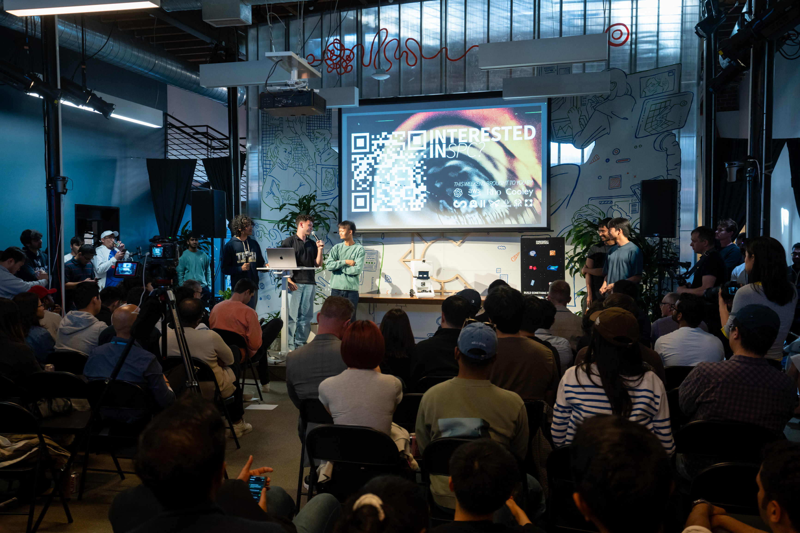
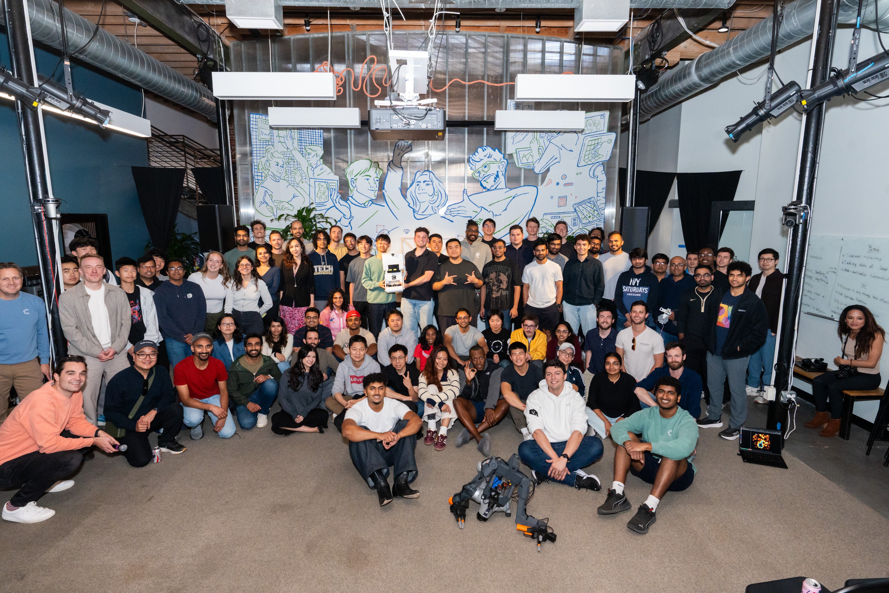

In May 2026, South Park Commons ran its first Embodied AI Hackathon, and we entered as a team of five. Going into it there was one thing I really wanted to focus on: personality. I wanted to build something that felt personal but was also genuinely useful. Looking at the personality extreme of the spectrum, we have the Anki Vector, which was/is a robot with a bunch of personality that roams your desk, but it has no purpose or benefit to the end user, so it never really took off. I wanted to build something that fit in the middle of the spectrum, a robot with a real personality, the kind of thing people react to and just want to watch all day, but a robot that also genuinely does something useful. Getting the personality right also meant designing and building our own robot from scratch, body and all, because the character is in the body, the face, and the way it moves, and you cannot get that from a generic platform.
It was a strange thing to attempt in 47 hours. When building software you can iterate in seconds, but a printed part can take hours, and there's no way to rush it. So we had to work around the printer instead of waiting on it, writing software while parts were printing and queuing the long prints to run overnight while we slept. 47 hours later we had a working robot and a second place finish out of more than thirty teams.

From Rocky to MO
The first idea wasn't MO at all. On a call before the hackathon I pitched building Rocky, the alien from the new Project Hail Mary movie. It had just come out, people online were raving about the character, and nobody had built one, so being first to do it felt like a great hook. Once we finally came together as a team for the first time and started planning the build, we realized building Rocky wasn't really feasible. He moves on five legs, all of them oddly specific, and getting him to walk would have taken the whole weekend. Building the locomotion alone would have swallowed the entire hackathon.
So I went back to brainstorming. I wanted something personal, something people already loved, and it obviously had to be a robot. I looked up robots from movies, went through Google Images, and landed on MO, the little cleaning robot from Pixar's WALL·E. MO was perfect. He barely gets any screen time and people adore him anyway, he is stubborn and a little sassy, and he is basically pure personality. He also rolls around on a wheeled base, which meant we wouldn't have to spend a lot of the hackathon working on locomotion and cleans, so it was real utility for the end user.
One of the few things the hackathon handed out was a LeKiwi base, a small 3-wheeled omnidirectional platform that can drive in any direction. We had something solid to build on, so we committed. We were building MoBot.
We built it to clean because that is what MO does. The easy version of a demo like this would just be a robot that just drives around. The version we wanted was harder: a robot that looks at a real floor, finds a mess it has never seen, and goes over to deal with it. That perception step, especially in a room where the lighting keeps changing, is usually the part that breaks.
Personality first
The first thing I built wasn't the driving or the cleaning. It was the eyes. Before the body existed at all, I wrote the software for a pair of eyes that actually emoted and got them running on an LCD screen using an ESP32 behind it handling the compute and control. It took just an hour or two, but it was the single thing we built that weekend with the greatest impact, and it really carried the personality. The moment the eyes came on, MoBot stopped reading as a machine rolling around and started reading as a character. That is the entire difference between a robot and MO.
The other personality trick was almost dumb in how simple it was. The arm would lift and drop on its own, at random, sometimes tapping the floor and sometimes just slamming it. It made the whole thing feel alive and a little impatient, which is exactly how MO behaves in the movie.

Building the body
We designed every part in CAD. It was my first time ever using CAD, so I learned it on the fly over the weekend and got passable by the end. We used MO as the reference and drew the entire body ourselves, printed it in black PLA, sanded it down, and spray painted it.
Not everything printed cleanly. One part came out slightly off and was getting in the way of how the screen sat in the head, and we had no time to print a new one. So I picked up a soldering iron and melted the bad piece off by hand. It worked, and was a great example of the scrappiness we really had to embody throughout the weekend to meet the really short deadline.
We were the only team in the entire hackathon that built our own embodiment from scratch. Everyone else started from a platform that already existed, a drone or a prebuilt arm, which is the reasonable way to spend 47 hours. We built the whole thing ourselves, the body, the controls, and the perception, and somehow it was designed, printed, assembled, and working by the end.

Inside, MoBot was a small stack of parts that mostly cooperated. A Raspberry Pi did the thinking and ran the vision. A camera fed it the floor. A speaker sat in the body and played MO's real sound clips from the film. The LeKiwi base handled movement on a 12V battery, and a portable charger powered the rest, with wiring I will generously call experimental.
The cleaning itself was a rotating cylinder on the end of the arm. The arm could lower the cylinder to the floor or raise it back up, and the cylinder was designed to take attachments, so you could swap in whatever a given mess needed. Adhesive for crumbs. A sponge or a mop collar for anything wet. In the demo we ran it as a bare cylinder, partly because the modular idea was the whole point and partly because we did not want to crush goldfish into the stage all weekend as it kept on cleaning them up.
Teaching it to see
The hardest part by a wide margin was getting MoBot to see. We built and tuned a lightweight vision model in OpenCV that could pick crumbs out of a carpet across different surfaces and lighting, which is the exact thing that kills most hackathon vision demos the second the room's lights change. It all ran on edge, on the Raspberry Pi itself. No cloud, no laptop in the loop, just a small model doing the work on a small computer inside the robot. Getting that model dialed in was beyond difficult and probably ate more of the weekend than anything else.
When the camera caught something that might be a mess, MoBot would stop. Holding still gave the camera a clean look, and it made the robot look like it had just spotted the mess. It would watch for a couple of seconds to be sure it was a real mess and not camera noise. Once it was sure, the model worked out two numbers. The first was how far away the mess was, which we calculated in centimeters and then converted into how far the wheels needed to turn. The second was theta, the angle the robot had to rotate to face the crumbs exactly. Then it turned through theta, drove the distance, lowered its arm, and cleaned.

Put all of it together and a full encounter went like this. MoBot would be rolling around with neutral eyes, scanning the floor. It would catch a mess, freeze, and its eyes would go wide, like it could not believe what it was looking at. As it locked on and started driving over, the eyes narrowed into the annoyed glare MO gives in the movie. It would lower its arm, clean the spot, announce "finished," and go back to neutral to keep exploring. The whole time it was muttering MO's clips from the film. People didn't watch a robot run a task. They watched MO get annoyed by a mess and go deal with it.

47 hours isn't enough time to build something good, it's barely enough to build something that works. But MoBot worked and we were beyond proud. It looked at a real floor, found a mess it had never seen, and went after it on its own, with enough personality that people actually rooted for it. We took second place, and the judges highlighted how we were building at the frontier of how humans will interact with robots in the future. For five people and a pile of black PLA, I will take it.
